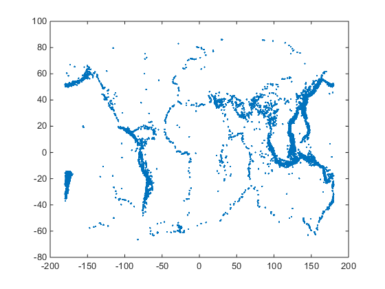
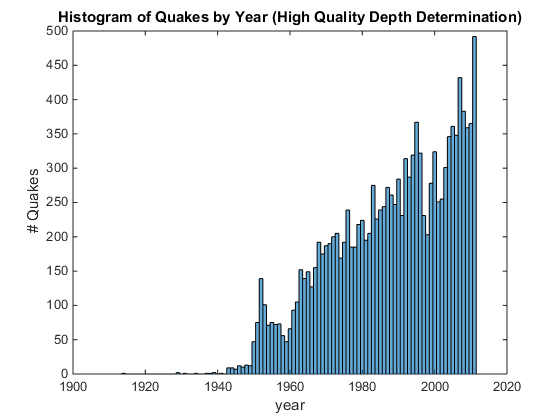
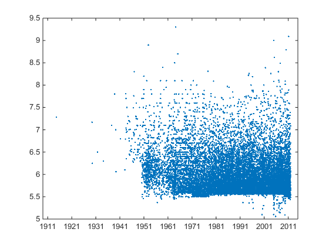
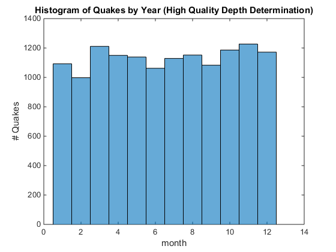
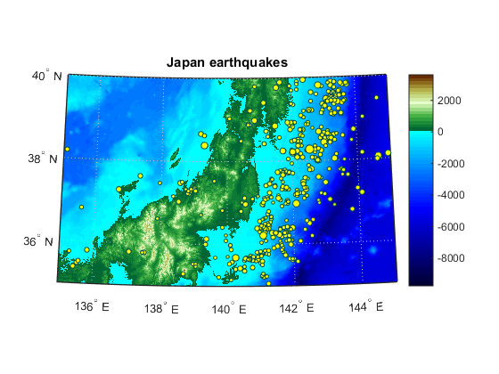
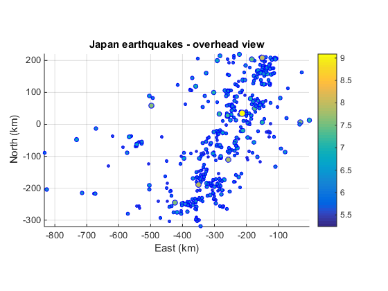
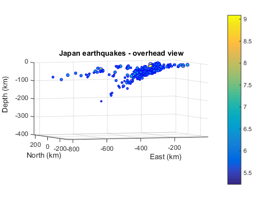

Contents
- Working with a "Big" Dataset
- Preview the data.
- Select a subset of information.
- Read in the selected information.
- Let's see what we've got.
- Let's make a histogram of the number of earthquakes vs. time.
- Median Time Between Quakes of Quality
- Plot time vs. magnitude
- Looking for seasonality?
- Looking at Earthquakes in Japan
- Extract Earthquakes in that Area
- Find the Largest Earthquake
- Plot on a Map of Japan
- Convert lat, lon, depth to x, y, z values and plot
Working with a "Big" Dataset
In this example, I will load an some historical data, earthquake hypocenters from the ISC-GEM Catalogue and see how we can work when the amount of data may be too large to fit into memory all at once.
%
Preview the data.
Having looked in advance, I know that this spreadsheet has a lot of lines of explanation and header information up front, followed by tabular data. Let's take a look at it.
ds = datastore('isc-gem-cat.csv','NumHeaderLines',56); preview(ds)
Warning: Variable names were modified to make them valid MATLAB identifiers.
ans =
x_Date lat lon smajax sminax strike q depth unc q_1 mw unc_1 q_2 s mo fac mo_auth mpp mpr mrr mrt mtp mtt eventid
_________________________ ___ ____ ______ ______ ______ ____ _____ ____ ____ ____ _____ ____ ____ ___ ___ _______ ___ ___ ___ ___ ___ ___ __________
'1900-07-29 06:59:00.00 ' -10 165 NaN NaN NaN 'C ' 0 25 'C ' 7.58 0.66 'C ' 'p ' NaN NaN NaN NaN NaN NaN NaN NaN NaN 1.6958e+07
'1900-10-09 12:28:00.00 ' 60 -142 NaN NaN NaN 'C ' 0 3.8 'C ' 7.69 0.68 'C ' 'p ' NaN NaN NaN NaN NaN NaN NaN NaN NaN 1.6958e+07
'1900-10-29 09:11:00.00 ' 11 -66 NaN NaN NaN 'C ' 0 2.8 'C ' 7.69 0.68 'C ' 'p ' NaN NaN NaN NaN NaN NaN NaN NaN NaN 1.6958e+07
'1901-08-09 13:01:00.00 ' -22 170 NaN NaN NaN 'C ' 0 11.1 'C ' 7.92 0.71 'C ' 'p ' NaN NaN NaN NaN NaN NaN NaN NaN NaN 1.6958e+07
'1901-08-09 18:33:00.00 ' 40 144 NaN NaN NaN 'C ' 0 6.1 'C ' 7.47 0.65 'C ' 'p ' NaN NaN NaN NaN NaN NaN NaN NaN NaN 1.6958e+07
'1902-04-19 02:23:00.00 ' 14 -91 NaN NaN NaN 'C ' 0 23.5 'C ' 7.47 0.65 'C ' 'p ' NaN NaN NaN NaN NaN NaN NaN NaN NaN 1.6958e+07
'1902-08-22 03:00:00.00 ' 40 77 NaN NaN NaN 'C ' 0 13.6 'C ' 7.69 0.68 'C ' 'p ' NaN NaN NaN NaN NaN NaN NaN NaN NaN 1.6958e+07
'1902-09-22 01:46:00.00 ' 18 146 NaN NaN NaN 'C ' 0 43.6 'C ' 7.47 0.65 'C ' 'p ' NaN NaN NaN NaN NaN NaN NaN NaN NaN 1.6958e+07
Select a subset of information.
I now select the subset of columns that I want to explore from this historical dataset. You can see I am choosing earthquake location, magnitude, moment, and quality information about the data. In addition, I specify the format I want to see it in after importing the information to MATLAB.
ds.SelectedVariableNames = {'x_Date','lat','lon',...
'depth','q_1','mw','q_2','mo','mo_auth'};
ds.SelectedFormats{1} = '%{yyyy-MM-dd HH:mm:ss.SS}D';
ds.SelectedFormats{5}= '%C';
ds.SelectedFormats{7} = '%C';
ds.SelectedFormats{9} = '%s';
preview(ds)
ans =
x_Date lat lon depth q_1 mw q_2 mo mo_auth
______________________ ___ ____ _____ ___ ____ ___ ___ _______
1900-07-29 06:59:00.00 -10 165 0 C 7.58 C NaN ''
1900-10-09 12:28:00.00 60 -142 0 C 7.69 C NaN ''
1900-10-29 09:11:00.00 11 -66 0 C 7.69 C NaN ''
1901-08-09 13:01:00.00 -22 170 0 C 7.92 C NaN ''
1901-08-09 18:33:00.00 40 144 0 C 7.47 C NaN ''
1902-04-19 02:23:00.00 14 -91 0 C 7.47 C NaN ''
1902-08-22 03:00:00.00 40 77 0 C 7.69 C NaN ''
1902-09-22 01:46:00.00 18 146 0 C 7.47 C NaN ''
ds.RowsPerRead = 1000; % normally 20000 dataChunk = read(ds); % show in variable editor
Read in the selected information.
Read it into a table, in chunks, selecting only data with high quality depths.
reset(ds) numreads = 0; eqQuality = table; while hasdata(ds) eqChunk = read(ds); idx = eqChunk.q_1 == 'A'; eqQuality = [eqQuality; eqChunk(idx,:)]; %#ok<AGROW> numreads = numreads + 1 end
numreads =
1
numreads =
2
numreads =
3
numreads =
4
numreads =
5
numreads =
6
numreads =
7
numreads =
8
numreads =
9
numreads =
10
numreads =
11
numreads =
12
numreads =
13
numreads =
14
numreads =
15
numreads =
16
numreads =
17
numreads =
18
numreads =
19
numreads =
20
numreads =
21
numreads =
22
numreads =
23
If I didn't want to show reading in the chunks, I could have read in the data this way instead, assuming it could all be read at once.
eqQuality = readall(ds);
Let's see what we've got.
plot(eqQuality.lon,eqQuality.lat,'.')
 Let's make a histogram of the number of earthquakes vs. time.
First let's see what the timespan is.
maxDt = max(eqQuality.x_Date) minDt = min(eqQuality.x_Date)
maxDt = 2011-12-27 15:21:59.17 minDt = 1914-08-04 22:41:39.94
Now our histogram.
histogram(year(eqQuality.x_Date),'BinMethod','integers'); xlabel('year') ylabel('# Quakes') title('Histogram of Quakes by Year (High Quality Depth Determination)')
Median Time Between Quakes of Quality
More math on dates. Let's find some statistics about the time spacing between earthquakes. Now I am creating a duration array and calculating some statistics from that array.
durs = diff(eqQuality.x_Date); disp(' Median Max Min (HH:MM:SS)') durStats = [median(durs) max(durs) min(durs)] ; disp(durStats) disp(' Median Max Min (days)') disp(days(durStats))
Median Max Min (HH:MM:SS)
22:19:10 130234:43:04 00:00:03
Median Max Min (days)
0.92998 5426.4 4.3403e-05
Plot time vs. magnitude
We can zoom in to see more detail.
plot(eqQuality.x_Date, eqQuality.mw,'.')
 Looking for seasonality?
We can aggregate the earthquake instances by month instead of year to look for seasonality.
histogram(month(eqQuality.x_Date),'BinMethod','integers'); xlabel('month') ylabel('# Quakes') title('Histogram of Quakes by Year (High Quality Depth Determination)')
Looking at Earthquakes in Japan
We are interested in looking at a particular area of Japan.
- http://www.earthobservatory.sg/news/great-east-japan-tohoku-2011-earthquake-important-lessons-old-dirt#.VMkrtmjF9Sv
- https://geos309.community.uaf.edu/
lat = [35 40]; lon = [135 145];
Extract Earthquakes in that Area
Using logical indexing, we can extract the earthquakes in the areas we are interested in studying further.
idxlat = eqQuality.lat > lat(1) & eqQuality.lat < lat(2);
idxlon = eqQuality.lon > lon(1) & eqQuality.lon < lon(2);
eqJ = eqQuality(idxlat & idxlon, :);
eqJ.depth = eqJ.depth *(-1000); % converting depth to negative values
Find the Largest Earthquake
[x,idx] = max(eqJ.mw); eqJ(idx,:)
ans =
x_Date lat lon depth q_1 mw q_2 mo mo_auth
______________________ ______ ______ ______ ___ ____ ___ ____ ________
2011-03-11 05:46:23.15 38.285 142.55 -20000 A 9.09 A 5.31 'gcmt '
Plot on a Map of Japan
We first plot the earthquakes on a map of Japan to see if they are located in a reasonable position.
load japantopo % load topo information (from NASA WorldWind WMS server) f = figure; % Plot topography worldmap(lat,lon) colormap(f,demcmap(double(Z1))); % change to more appropriate colormap geoshow(Z1,R1,'DisplayType', 'texturemap'); hold on % Plot earthquakes ptSz = 2 + 60*(eqJ.mw-5.0)/5.0; % use ptSz for magnitude scatterm(eqJ.lat,eqJ.lon,ptSz,... 'MarkerFaceColor','y','MarkerEdgeColor',[0 .3 .3]) hold off colorbar % add a colorbar title('Japan earthquakes')
Convert lat, lon, depth to x, y, z values and plot
We are interested in location as a function of depth so to plot the
quakes, we first convert our locations to a local Cartesian coordinates.
We assume geodetic coordinates relative to a reference ellipsoid
('World Geodetic System 1984') to get our x,y,z (enu) values.rsph = referenceEllipsoid('earth'); [xEast,yNorth,zDepth] = geodetic2enu(eqJ.lat,eqJ.lon,eqJ.depth,38,145,0,rsph); figure scatter3(xEast./1000,yNorth./1000,zDepth./1000,ptSz,eqJ.mw,... 'filled','MarkerEdgeColor','b') xlabel('East (km)') ylabel('North (km)') zlabel('Depth (km)') title('Japan earthquakes - overhead view') axis equal zlim([-400 0]) colorbar view(0,90)
Display image from published results to compare.
view(-20,3) figure % imshow('Tohoku2-bloc_diagramme_japan_earthquakes.jpg',... % 'InitialMagnification','fit');